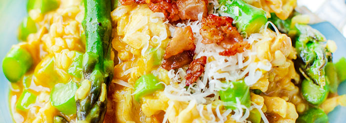

Risotto ze szparagami i kurczakiem
Składniki
- 1 mała cebula
- 2 ząbki czosnku
- 1 pojedynczy filet z kurczaka
- 1/2 szklanki ryżu do risotto (arborio)
- 1/4 szklanki białego wina
- ok. 600 ml bulionu drobiowego
- 1 pęczek szparagów
- przyprawy: sól, pieprz, 1/3 łyżeczki kurkumy i ostrej papryki, 1/2 łyżeczki słodkiej papryki
- 1/3 szklanki startego parmezanu lub grana padano
- oraz: masło, oliwa extra vergine
- posypka (opcjonalnie): 4 cienkie plasterki wędzonego boczku
Przygotowanie
- W garnku na 1 łyżce oliwy zeszklić pokrojoną w kosteczkę cebulę oraz starty na tarce czosnek. Przesunąć je na bok garnka, a w wolne miejsce włożyć 1 łyżkę masła oraz pokrojonego w kosteczkę kurczaka, doprawić go solą oraz pieprzem i obsmażać przez około 3 minuty co chwilę mieszając.
- Dodać ryż i dokładnie go obsmażyć. Wlać wino i gotować przez kilkanaście sekund aż odparuje, dodać wszystkie przyprawy.
- Wlewać po około pół szklanki gorącego bulionu i gotować ryż bez przykrycia aż wchłonie większość płynu. Wówczas wlać kolejną porcję bulionu i gotować jak poprzednio. W międzyczasie od czasu do czasu zamieszać. Czynność powtarzać aż ryż będzie ugotowany al dente (w sumie ok. 17 minut). Doprawić solą i pieprzem.
- Razem z ostatnią porcją bulionu dodać szparagi. Należy je wcześniej umyć, odłamać twarde, białe i grube końce (same złamią się w odpowiednim miejscu). Zielone łodyżki pokroić na plasterki, główki pozostawić w całości.
- otowe risotto odstawić z ognia, dodać 2/3 ilości tartego parmezanu i 2 łyżki masła, wymieszać. Wyłożyć na talerze, posypać resztą sera.
Propozycja podania